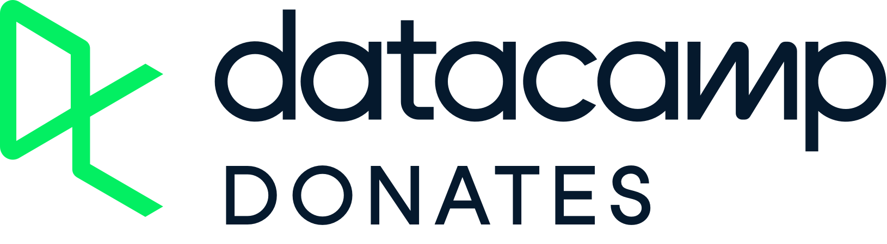

DataCamp Donates Scholarship


Data Engineering Pilipinas is an official DataCamp Donates Partner. Members of the community can avail of FREE DataCamp Premium access through our scholarship application process.
About the Partnership
We’re proud to partner with DataCamp Donates to offer exclusive scholarships for free premium access to DataCamp’s top-tier Data Science, Data Engineering, and AI courses.
What you get:
- Premium Access — Unlock top-tier courses from DataCamp, normally valued at $399 USD per year, at no cost to you.
- Learning Journey — Enhance your skills and advance your career with cutting-edge, industry-trusted content.
- Community Support — Join a network of like-minded Filipino learners and grow together.
Already applied? Track the status of your application using our Scholarship Status Checker.
Ready to join? Submit your application here and take the first step toward mastering data skills for free.
Scholar Responsibilities at a Glance
Once accepted, scholars are expected to uphold the following commitments to keep their access active:
| Responsibility | Details |
|---|---|
| Monthly XP Requirement | Earn at least 4,000 XP per month (roughly 3 hours of learning) |
| Accept Invitation Promptly | Accept your DataCamp invitation within 2 weeks of receiving it |
| Active Usage | Begin using the platform within 2 weeks of accepting the invitation |
| Social Sharing | Tag @DataCamp and use #dcdonates when sharing progress on social media |
| Community Engagement | Actively participate in courses and engage with fellow DEP learners |
| Share Your Story | Submit your success story to help sustain the partnership for future scholars |
Slots are limited and managed by volunteer administrators. Access may be revoked without warning if any of the above commitments are not met. The principle is simple: if you are actively using it, you have nothing to worry about.
What to Expect After Applying
- Submission — Complete and submit the application form with accurate information.
- Batch Review — Applications are reviewed in batches by volunteer administrators. This may take some time; patience is appreciated.
- Status Update — Check your status anytime via the Scholarship Status Checker.
- Invitation — Approved applicants will receive a DataCamp invitation via email. Accept within 2 weeks.
- Onboarding — Join the official DataCamp GC and start learning!
Frequently Asked Questions
Q1: Who is eligible for the DataCamp scholarship?
The scholarship is available to all Filipino members of Data Engineering Pilipinas. It includes 12 months of unlimited premium access to DataCamp.
Q2: How will I know the status of my application?
Check your application status anytime using the Scholarship Status Checker. Here’s what each status means:
Accepted Your DataCamp application has been approved. Please wait for the official acceptance email.
Action Required Your application is pending for approval due to incorrect entry of your birthday. Please edit your response in the application form.
Invite Sent Please check your email (including spam/junk folder) for your scholarship access details.
Follow up sent Your DataCamp Scholarship application has been approved but not yet accepted. Please take action or access will be removed.
Invite Withdrawn The invitation could not be sent because the email address is invalid or unavailable.
Referred to country of residence Hi, your application has been declined due to limited slots.
Access Removed Your DataCamp access has been removed. Please reach out if there has been a mistake, re-apply otherwise.
Enrolled Welcome to DataCamp! DEP is excited to support you on your learning journey. Learn at your own pace and enjoy the process.
Already Enrolled You’re already enrolled in DataCamp. Please check your DataCamp access by logging in using the email address you used in the application.
Pending Review Your application is still on-process. Thank you for your patience.
Declined - Underage Thank you for applying… applicants must be at least 15 years and 9 months old…
Declined Your DataCamp application has been declined. Please reapply on the next scholarship roll-out.
Q3: How can I avoid common mistakes in my application?
- Read all instructions carefully before filling out the form.
- Provide accurate personal details: full name, birthday, city, and country.
- Complete every section of the form — do not leave fields blank.
- Answer questions thoughtfully and sincerely; incomplete or insincere responses are common reasons for rejection.
Q4: What should I do if my application is incomplete?
Double-check your personal details and ensure all sections are filled out completely. If it has been a while since submission without a response, review your answers and resubmit if necessary.
Q5: Why is my application not yet approved?
Common reasons include incomplete information, inaccurate details, or answers that do not demonstrate genuine intent to use the scholarship. We have limited slots and volunteer resources, so we prioritize applicants who are honest, careful, and clearly committed to using the opportunity.
Q6: Is there a chance my access will be revoked?
Yes. Access may be revoked in any of the following situations:
- Invitation not accepted within 2 weeks of being sent
- No usage within 2 weeks of accepting the invitation
- Monthly 4,000 XP assignment not completed within 4 weeks
We only have limited slots and want to prioritize access for those who will genuinely use the platform.
Q7: How long does it take before an unused slot is reassigned?
- No acceptance within 2 weeks of invitation → invitation withdrawn
- No usage within 2 weeks of acceptance → access revoked
- Monthly 4,000 XP not completed within 4 weeks → access revoked
DataCamp Premium costs approximately $29 USD per month. We want to maximize every slot for the community over the full 12-month period.
Q8: I really like this initiative. How can I support it?
We appreciate your support! Here are some ways to help:
- Invite friends and colleagues who are interested in data to join the DEP community.
- Encourage others to apply to the DEP x DC Scholarship Program.
- Share your learning journey and milestones on social media following the official community guidelines on Facebook, Discord, and LinkedIn.
- Help fellow learners by answering questions, sharing best practices, and offering guidance.
- Join the official DataCamp GC and actively participate in discussions.
- Submit your success story (see Q12 below) to help sustain the partnership.
Q9: Who can I contact if I have questions about my application?
For questions not covered in this FAQ, visit Data Engineering Pilipinas and ask in the community via Facebook or Discord. Our volunteer team monitors these channels regularly.
Q10: Are there curated learning tracks by DEP?
DEP does not provide its own curated tracks. DataCamp offers extensive learning paths you can choose from based on your interests and goals. For guidance, refer to the DEP Study Roadmaps.
Q11: Do we have teams or group learning?
As of now, all learners participate individually. There are no formal team structures within the scholarship program.
Q12: Can I share my success story?
Yes — and we strongly encourage it! Sharing how DataCamp has helped your learning or career journey helps demonstrate the impact of the initiative and supports the renewal of the partnership for future scholars.
Submit your success story here
Q13: What happens when my scholarship expires?
There are two types of expiration to be aware of:
- Scholarship expiry — The scholarship lasts 12 months. It may also expire earlier due to inactivity. You can re-apply using the same application form to renew your access.
- Partnership expiry — DEP’s partnership with DataCamp Donates is also renewed annually. Submitting success stories (see Q12) helps demonstrate community impact and supports renewal of the partnership.
Q14: What if my DataCamp account is not registered using Gmail?
You have two options:
- Option 1 — Create a new DataCamp account using the Gmail address you provided in your application.
- Option 2 — Update your existing DataCamp account email to match the Gmail address used during registration.
Q15: Where can I check the status of my scholarship application?
Use the Scholarship Status Checker and enter your details to view the latest update on your application.
This page is maintained by the DEP Core Team. For updates and announcements, follow us on Facebook, Discord, and LinkedIn.